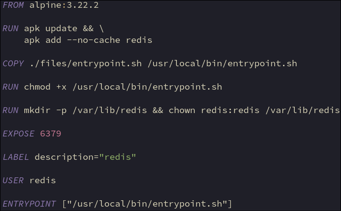

• Install redis package containg redis-server
• Copy entrypoint script to container and make it executable
• Create redis data dir and set ownership to redis user
• Standard redis server port
• Used to communicate with wordpress
• Switch to redis user created by redis-server
• Don’t run as root for security reasons
• Run entrypoint script as redis user